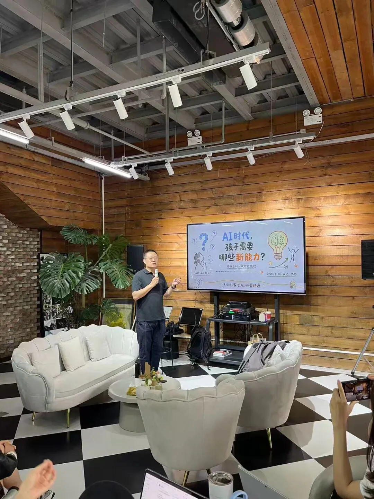

活动回顾
北京.顺义 AI 家长公益课
顺义 LIA 公益社区 · 2026年5月

"
来的时候是好奇，听到一半心里一紧：AI 时代，孩子现在学的东西和将来要用的能力，真的不能脱节太远。
那天下午，武宁老师围绕"AI 时代，孩子需要哪些新能力？"展开分享。现场没有把 AI 当成神奇按钮来演示，而是从家长关心的真实问题出发，讨论提问、判断和领导力这些能力为什么会变得更重要。
随后进入体验环节。家长们在自己的电脑上动手尝试，不是只看别人操作，而是自己输入、观察结果、追问和修改。那几秒的沉默，全场都安静了。
现场最触动家长的一句话
"同一个 AI 工具，不同的提问和判断，结果会差很多。真正重要的，是人能不能把问题说清楚。"
讲座结束后，家长群里有三件事被反复提：希望孩子尽快上这样的 AI 训练营；家长也想跟着学；别只教"怎么操作 AI"，更要教"AI 时代怎么思考"。
这个训练营，就是对这三个期待的回答。